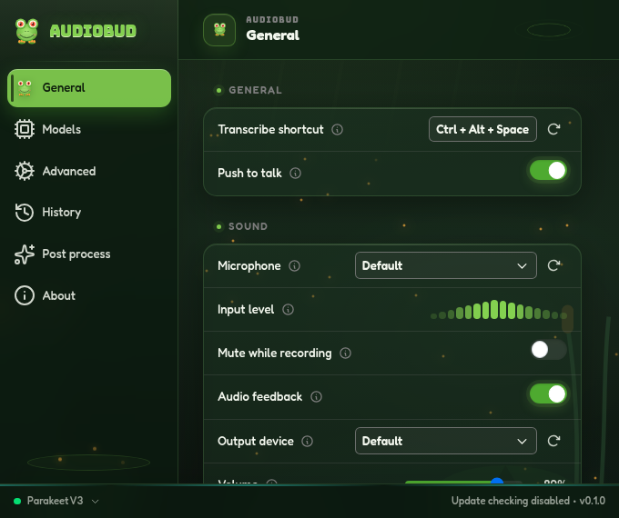
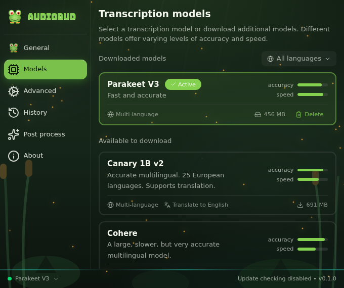

Press your hotkey
Use Ctrl+Alt+Space or choose a shortcut that fits the way you work.
Windows x64 · Local-first
AudioBud turns one hotkey into fast, private speech-to-text in whatever app you already have open. Your audio stays on your machine.

One shortcut. Zero detours.
No recorder window, no copy-and-paste shuffle, and no cloud wait. AudioBud works where you are already writing.
Use Ctrl+Alt+Space or choose a shortcut that fits the way you work.
Local voice activity detection trims silence while your chosen model handles the words.
The transcript lands in the focused text field by clipboard or direct typing.
Built for real dictation
A focused settings surface gives you control without turning a simple dictation tool into a dashboard.
Speech recognition runs locally. Audio is not sent to a transcription service, and AudioBud does not require an account.
Pick Parakeet, Whisper, Moonshine, SenseVoice, Canary, Cohere, and more from inside the app.
Custom words, replacements, number formatting, raw mode, retention controls, and optional post-processing.
Make it yours
Choose input and output devices, push-to-talk behavior, feedback sounds, overlay position, paste method, and history limits from one calm interface.

Choose your engine
Parakeet V3 is the Windows default. Other local engines cover translation, broader language support, and different hardware.
Fast multilingual dictation for 25 European languages.
Multiple sizes, broad language coverage, and translation.
Moonshine, SenseVoice, GigaAM, Canary, and Cohere fill speed and language niches.
Ready when you are
Download the latest Windows x64 release, or inspect every line on GitHub and build AudioBud yourself.
Code-signed release: The latest Windows installers are signed and timestamped through Microsoft Artifact Signing. The signature identifies Joseph Amditis as the publisher. SmartScreen can still show a reputation warning while the release builds reputation.